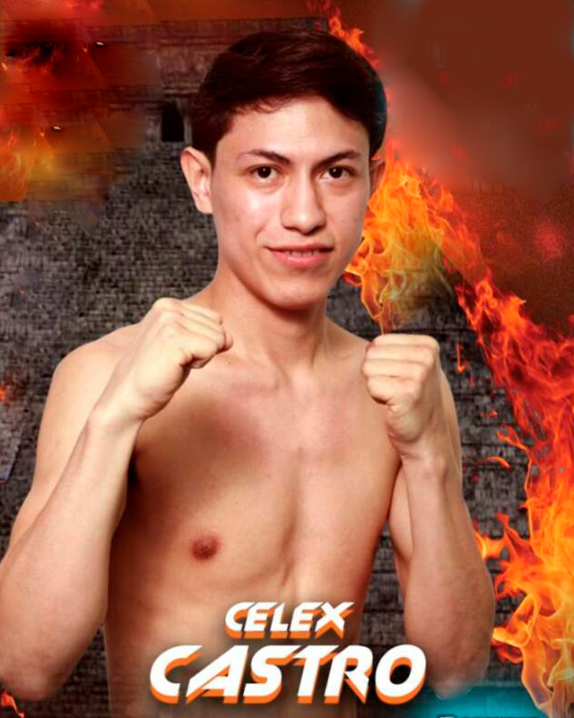

← Nuestros peleadores
Celex Castro

Cancún, Quintana Roo · 24-0-0, 18 KO’s
Hijo de un referee profesional y ex boxeador, los costales, guantes y peras fueron parte de la vida de Celex Castro desde que tiene memoria; comenzó a competir antes incluso de saber leer por lo que acumuló gran experiencia en el terreno aficionado, logrando convertirse en medallista de Oro en la Olimpiada Nacional 2017 y como miembro del Comité Olímpico Mexicano; su incursión en el boxeo profesional ocurrió al siguiente año, donde de inmediato un estilo efectivo se volvió su bandera, espigado y con alcance privilegiado para la división, ha escalado de nivel, llegando a hilar victorias por nocaut frente a oponentes extranjeros y de gran nombre, logrando colarse a las clasificaciones mundialistas por lo que su gran oportunidad está a la vuelta de la esquina.